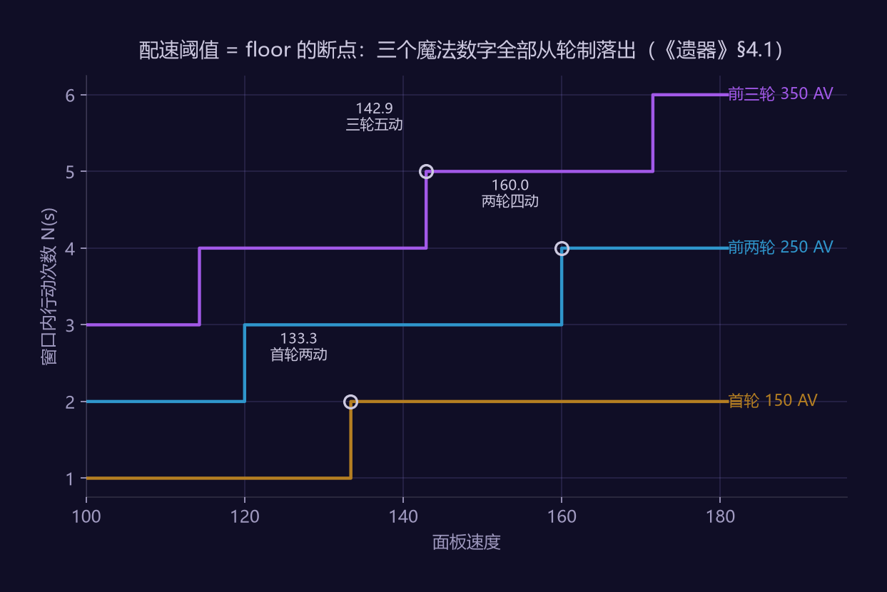
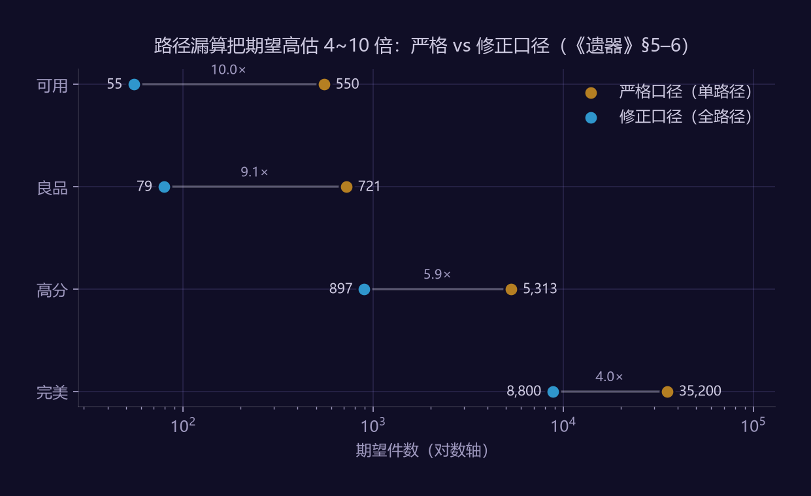

作者：赵鹏淦（Penggan Zhao）｜ Newcastle University · MSc Game Engineering 版本：v1.1（v1.0 经对照行业点评标准的评审修订，修订项见文内标注）｜ 拆解版本：2.x–3.x 拆解范围：遗器的概率结构、养成期望建模、速度机制的离散性、体力经济 定位：数值策划向；与《鸣潮声骸系统拆解案》（系统向）、《鸣潮战斗系统拆解案》（机制向）构成作品集三件套
关于本拆解案的方法说明
v0.1 在第 4 节留了一句承诺：「v0.2 目标：把这条链算穿」。本版兑现它，并额外做了一件公开攻略里没人做的事——从行动值公式反推社区流传的全部配速阈值。
| 公开原材料 | 本文的推导层 |
|---|---|
| 速度 × 行动值 = 10000；混沌回忆轮制（首轮 150 AV + 每轮 100 AV） | 配速阈值的第一性原理推导——全部社区"魔法数字"（133.3 / 142.9 / 160.0）从同一条轮制规则落出 |
| 速度副词条三档 2.0/2.3/2.6 | 边际收益的锯齿性量化：+2.6 速词条的阈值命中率仅 3.9%~9.1%（随轮数窗口），其余 >90% 情况下收益精确为零 |
| 主属性权重、副词条规则、强化机制 | 完整毕业概率链求解 + 分层标准下的期望开拓力与天数 |
| —— | 一次模型错误的发现与修正（§6），高估了 5.9 倍 |
全部计算由 analysis/hsr_relic_math.py 生成，运行即可复现。
⚠️ 参数声明：主属性权重、初始副词条条数比例、开拓力参数均标注 [需核验]，取自公开整理与社区统计。§6 的结论形态（路径漏算导致系统性高估）不依赖具体取值，具体天数依赖。核验方法见 §9。
1. 选题说明
装备词条系统在动作游戏（鸣潮）里承担"刷取玩法"，在回合制里则是纯数值容器——没有操作补偿，词条期望直接等于战力。这使遗器成为拆数值的理想标本：整条链路可以完全用概率与期望描述。
但真正让我选它的是速度。遗器里所有其他词条的收益都是连续的，只有速度不是——它经过一个 floor 函数，收益呈阶跃。这个差别造就了崩铁独有的"配速文化"，也造就了玩家侧最强烈的养成挫败感。它值得单独一章。
给谁看：本案面向回合制 / 词条养成品类的数值岗——尤其是米哈游的竞争序列。遗器是被验证过的成熟系统，正向说明书式拆解只能体现下限；本案刻意只做说明书不做的三层（阈值推导 / 概率链求解 / 模型证伪），用同一选题展示上限。对已做出该系统的原厂，这些推导是复核；对想做同品类的竞对，它们是可以直接搬走的养成周期估算工具。
2. 系统定位
- 角色养成的无上限末端：等级 / 行迹 / 光锥均有确定性上限，遗器词条是唯一开放式追求
- 开拓力的主要消耗出口：版本中后期开拓力几乎全部流向遗器本，体力价值 ≈ 遗器产出价值，直接锚定月卡的边际价值
- 流派构筑的物质基础：套装效果与主属性组合决定 build 空间
3. 获取链路
开拓力 → 侵蚀隧洞（散件套装）/ 位面饰品提取（位面球 + 连结绳）
→ 掉落（星级按世界等级分布）
→ 副产物：遗失残骸类经验材料
无体力途径：历战余响（周本限次）/ 活动 / 万能合成机（残骸合成 + 自选）
与鸣潮声骸的根本差异：遗器获取被开拓力严格门控（约 240/天），声骸大世界无限刷。这个差异的连锁后果贯穿全文，在 §5.3 得到一个反直觉的结论。
4. 速度机制：遗器系统里唯一的离散维度
本文最独特的一章。
4.1 配速阈值的第一性原理推导
公开公式：速度 × 行动值 = 10000。速度为 s 的单位每次行动需要 10000/s 个行动值（AV）。在长度为 W 的战斗窗口内，行动次数为：
N(s) = floor( W · s / 10000 )
关键在 floor。 要在窗口 W 内行动 n 次，所需最低速度为：
s_n = n × 10000 / W
这就是"配速阈值"——不是玄学，是把 floor 的断点解出来。
窗口 W 不是任取的。 配速讨论几乎全部发生在混沌回忆（轮数限时）语境下，其轮制规则为首轮 150 AV、之后每轮 100 AV，因此有意义的窗口只有：
W(c) = 150 + 100 × (c − 1) → 150 / 250 / 350 / …
逐窗口解出阈值 s_n = n × 10000 / W(c)：
| 窗口 | 覆盖轮数 | 阈值序列（速度） |
|---|---|---|
| 150 AV | 首轮 | 两动 133.33 ／ 三动 200.00 |
| 250 AV | 前两轮 | 三动 120.00 ／ 四动 160.00 |
| 350 AV | 前三轮 | 四动 114.29 ／ 五动 142.86 ／ 六动 171.43 |
结论一：社区流传的配速阈值全部从轮制规则落出。
对照社区常年流传的"魔法数字"：
- 133.4 速 ← 首轮（150 AV）两动，精确值 133.33
- 142.9 速 ← 前三轮（350 AV）五动，精确值 142.86
- 160.0 / 160.1 速 ← 前两轮（250 AV）四动，精确值 160.00
全部吻合，且社区值均取略高于精确值的圆整——面板显示会截断隐藏小数，配装必须保证"真实速度 ≥ 边界"，这个上取整的裕量本身就是玩家逆向工程做得有多精确的证据。玩家社区以口耳相传方式积累的配速表，本质上是用大量实战反复试出 floor 函数的断点位置。

图：N(s) = floor(W·s/10000) 在三个轮制窗口下的阶梯，圆圈即三个"魔法数字"所在断点。由 analysis/make_charts.py 生成，可复现。
修订说明：v1.0 曾用"W=300（常见 BOSS 一阶段）"解释 133.3——该窗口在轮制下并不存在，它与 133.33 的吻合只是
2/150 = 4/300的算术巧合。v1.1 换成轮制推导后，全部魔法数字从同一条规则落出，不再需要为每个数字单独挑一个窗口。修正来自评审，保留说明以维持本作品集"修订可追溯"的原则。策划视角：玩家会自发地对离散机制做逆向工程，而且做得相当准。设计带断点的机制时，可以默认断点最终会被公开——真正需要决定的是要不要主动告诉玩家。米哈游选择了不告诉，代价见下节。
4.2 边际收益的锯齿性
一条速度副词条按最高档 +2.6 速。相邻阈值的间隔为 10000 / W，命中率即 2.6 ÷ (10000/W)（解析求解——不能从抽样表里数命中率：扫描宽度若不是阈值间隔的整数倍，抽样会有偏，这个坑我自己先踩了一次）：
| 窗口 W | 阈值间隔 | +2.6 速的命中率 | 期望收益（行动数） |
|---|---|---|---|
| 150 AV（首轮） | 66.67 速 | 3.9% | 0.039 |
| 250 AV（前两轮） | 40.00 速 | 6.5% | 0.065 |
| 350 AV（前三轮） | 28.57 速 | 9.1% | 0.091 |
结论二：速度是唯一一个离散收益不被战斗内重复采样平滑的词条。
玩家实际拿到的从来不是百分之几的平均值，而是 0 或 1：
- 落在阈值前 → 跨过，收益是一整个回合（约 +33%）
- 落在阈值后 → 收益精确为零，这条词条完全白给
这解释了两个玩家侧现象：
- "速度词条要么神要么废" —— 不是错觉，是 floor 的必然结果
- 速度遗器的估值极其两极 —— 同样 +2.6 速，对 A 玩家值一个回合，对 B 玩家一文不值，取决于各自面板落在阈值哪一侧
对比暴击率：单次攻击的暴击实现值同样是 0/1，但它在一场战斗内被几十次攻击反复采样，大数定律把实际收益拉回期望；速度的 0/1 由面板一次性决定，整场战斗停在同一侧——没有任何重复采样来平滑它。这才是速度与其他所有词条的本质区别。
4.3 这是缺陷还是特性
倾向认为是特性，但缺了一半的配套。
阶跃收益的正面价值很实在：它制造了明确、可达成、可验证、可炫耀的离散里程碑，这是连续词条给不了的成就感，也是配速文化能形成的根源。
但米哈游只做了机制，没做信息：
- 游戏内不显示战斗窗口 W，玩家无法自己算阈值
- 不显示"距离下一个阈值还差多少速度"
- 遗器界面对速度词条与其他词条一视同仁地展示
结果是这层深度被外包给了攻略站与配速计算器。查攻略的玩家获得额外深度，不查的玩家则在承受一个自己无法理解的随机性——他们只知道"有时候加速度有用，有时候没用"。
→ 改进：遗器详情页对速度词条追加一行「当前 128.4 → 距 133.3 阈值还差 4.9」。 → 成本：极低，数据全在客户端，只是没有暴露。
这与《鸣潮声骸系统拆解案》§5.3 发现的问题完全同构：都是做好了深度，却没把判断深度所需的信息交给玩家。两家在这一点上犯了同一个错，说明它是个行业级的盲区，而不是某一款产品的疏忽。
5. 概率链：把 v0.1 的承诺算穿
5.1 链条分解
目标：一件「躯干 · 暴击率主属性 · 双暴副词条 · 强化命中」的遗器。
P(部位) × P(主属性) × P(初始条数) × P(副词条含目标) × P(强化落点)
| 环节 | 概率 | 来源 |
|---|---|---|
| 掉落为躯干 | 0.2500 | 隧洞四部位 [需核验是否均匀] |
| 主属性为暴击率 | 0.1000 | 权重 1000/10000 [需核验] |
| 初始 4 条副词条 | 0.2000 | [需核验] |
| 4 条中含暴击伤害 | 0.3636 | 超几何，池 12 种减主属性占用 |
强化落点服从二项分布 B(5, 1/4)（5 次强化各自均匀落在 4 条之一）：
| 命中次数 k | P(X=k) | P(X≥k) |
|---|---|---|
| 0 | 0.2373 | 1.0000 |
| 1 | 0.3955 | 0.7627 |
| 2 | 0.2637 | 0.3672 |
| 3 | 0.0879 | 0.1035 |
| 4 | 0.0146 | 0.0156 |
| 5 | 0.0010 | 0.0010 |
5.2 严格模型的结果
| 标准 | 总概率 | 期望件数 |
|---|---|---|
| 可用（主属性对 + 有暴伤副词条） | 0.001818 | 550 |
| 良品（+ 暴伤强化 ≥1 次） | 0.001387 | 721 |
| 高分（+ 暴伤强化 ≥3 次） | 0.000188 | 5313 |
| 完美（+ 暴伤强化 ≥4 次） | 0.000028 | 35200 |
结论三：毕业成本的量级由「链条长度」决定，而非任何单环。
没有任何一环的概率低得离谱——最低的是主属性 10%。但五环相乘后，高分档达到数千件。
这是乘法链的典型特征：设计师可以通过增删一个环节，在不改动任何单项概率的前提下，把养成周期改变一个数量级。相比调整权重，增删环节是更隐蔽也更有力的调控手段——玩家能感知到"暴击率主属性只有 10%"，但很难感知到"多了一层初始条数判定"意味着什么。
5.3 与鸣潮的跨产品对照
| 随机层数 | 期望件数（单路径严格口径） | 获取门控 | |
|---|---|---|---|
| 鸣潮声骸 | 3（主词条 / 副词条种类 / 档位） | 256 件 | 无（时间即成本） |
| 崩铁遗器 | 5（部位 / 主属性 / 初始条数 / 副词条 / 强化落点） | 5313 件 | 开拓力（约 240/天） |
口径声明：两列同为"单路径严格口径"，同口径内可比。§6 将把崩铁修正到 897 件（路径漏算 5.92×）；鸣潮侧的对应路径修正未做，修正口径下的跨产品对照留待姊妹篇同步后进行——本节结论只在严格口径内声明。
按严格口径，崩铁的随机深度是鸣潮的 20 倍，但崩铁有门控、鸣潮无门控——两者的实际毕业周期被拉回同一量级。
随机深度与获取速度是一对配平参数，只看其中任何一个都会误判。这是本文与姊妹篇合起来才能得到的结论：单看崩铁会觉得"随机太深"，单看鸣潮会觉得"要求太苛刻"，并排看才知道两家是在用不同旋钮解同一道题。
6. 一次被自己揪出的模型错误
§5.2 的数字经不起一次量级对照：高分档 5313 件按 §7 参数折合约 20 个月开拓力——而混沌回忆满星需要两支队伍共 8 名成型角色，大量玩家在开服后的前几个版本就已做到。若单件高分躯干真需 20 个月，"8 角色成型"在时间预算上不可能发生。当模型结论与可观测的玩家群体状态差一个数量级时，先查模型。
逐条审视 §5 的隐含假设，找到两处遗漏：
遗漏 1：只算了一个方向。 §5 算的是"暴击率主属性 + 暴伤副词条"。但"暴伤主属性 + 暴击率副词条"同样是一件毕业躯干，权重也是 1000/10000。有效路径至少两条，漏掉了一半。
遗漏 2：把 80% 的遗器直接扔了。 §5 只统计初始 4 条的情况（P=0.20）。但初始 3 条的遗器会在 +3 时补上第 4 条，之后还有 4 次强化——它照样能毕业，只是强化次数少一次。这条路径覆盖 80% 的掉落，完全不该被排除。
修正后（合并两条初始路径、按初始条数区分强化次数、路径数 ×2）：
| 标准 | §5 严格 | §6 修正 | 高估倍数 |
|---|---|---|---|
| 可用 | 550 | 55 | 10.00× |
| 良品 | 721 | 79 | 9.17× |
| 高分 | 5313 | 897 | 5.92× |
| 完美 | 35200 | 8800 | 4.00× |

图：同一目标的期望件数，严格口径（单路径）系统性高出修正口径 4~10 倍；对数轴上的水平距离即高估倍数。由 analysis/make_charts.py 生成，可复现。
结论四：概率模型最常见的错误不是算错，是路径漏算。
高分档从 5313 降到 897，高估了 5.9 倍——而两次计算的每一步算术都是对的。差别全部来自目标定义：
- 严格模型问的是"某一条特定路径要多久"
- 修正模型问的是"任意一条能达成目标的路径要多久"
玩家的真实体验对应后者。策划做养成周期估算时若按前者报数，会系统性把周期高估数倍，进而把掉落率调得过松。
这个错误在实际工作里比算错公式常见得多，而且很难被发现——因为模型自洽、数字精确、每一步都能复查通过。唯一的警报是它与实际体感不符。 所以数值模型必须有一个体感锚点做交叉验证，这也是本拆解案坚持给每个结论找可观测对照的原因。
术语澄清：玩家日常说的"毕业"通常指本文的良品到高分之间（双暴总量达标即可，不要求单一词条被强化三次以上）。"完美"档（8800 件）在实践中基本属于炫耀品而非目标。
7. 换算成开拓力与天数
参数 [均需核验]：每日开拓力 240，单次隧洞 40 点，期望掉落 1.5 件 → 每日约 9 件。
| 标准 | 期望件数 | 期望天数 | 折合月数 |
|---|---|---|---|
| 可用 | 55 | 6.1 | 0.2 |
| 良品 | 79 | 8.7 | 0.3 |
| 高分 | 897 | 99.6 | 3.3 |
| 完美 | 8800 | 977.8 | 32.6 |
结论五：养成曲线被设计成一条渐近线，而不是一个终点。
同一个系统内跨越三个数量级——可用件几天即得，高分件三个多月，完美件近三年。这个跨度本身就是设计：
(1) 渐近线的坡度。 玩家真实路径不是"追求毕业"，而是不断用良品替换可用。"可用"到"高分"之间 16 倍的成本差，正是这条渐近线的坡度：前段爬得飞快（几天一件）让新玩家快速有正反馈，后段几乎水平（三个月一件）让老玩家永远有事做。
(2) 止损设计是必需品而非福利。 万能合成机自选主属性，等于去掉主属性这一环（10% → 100%），期望成本立刻降到 1/10。合成机的真实作用不是"送遗器"，是砍掉概率链的一环——理解这一点，才能正确评估这类机制的投放力度。
(3) 无体力途径是流失率的对冲。 在纯开拓力门控下，上表的天数会直接转化为流失率，历战余响这类设计是必要的托底。
拆解养成系统时，孤立地看毕业概率会得出"数值离谱"的结论；把止损设计一起看，才能看出真实的养成曲线是被三四个机制共同塑形的。这与《鸣潮声骸拆解案》§6 的结论一致：单看任何一条都会误判，合起来看才是完整的成本结构。
8. 跨游戏对照与配置表设计
8.1 遗器 vs 声骸 vs 圣遗物
| 维度 | 崩铁遗器 | 鸣潮声骸 | 原神圣遗物 |
|---|---|---|---|
| 获取门控 | 开拓力（可付费回复） | 无门控（时间即成本） | 树脂（可付费回复） |
| 部位数 | 6（4 散件 + 2 位面） | 5（COST 4/3/3/1/1） | 5 |
| 副词条机制 | 掉落即定池，强化随机指向 | 调谐逐条揭示 | 同崩铁 |
| 定向手段 | 合成自选主属性 | 定向刷怪（怪物 = 声骸） | 定向副本 |
| 装备侧玩法输出 | 无（纯数值） | 首位声骸主动技 | 无 |
| 离散维度 | 速度阈值（唯一） | 无 | 无 |
| 随机深度 | 最深（5 层） | 中（3 层 + COST 构筑层） | 深（4 层） |
三家在同一道题（无上限词条追求）上的分歧完全由品类决定：回合制把深度全放进随机层数与离散阈值；动作游戏用获取端玩法化与装备技能分走一部分深度预算。写数值案时先问品类，再谈概率。
8.2 配置表设计
对应实际工作中"文档写给程序看"的交付标准。
- relic_table：
relic_id(int)/set_id(int)/slot(int 枚举)/rarity(int)/main_pool_id(int)/icon_id(int→资源表) - main_stat_pool：
pool_id/attr_id/weight(int, 万分制)/value_base/value_per_level（成长写斜率，不写逐级表） - substat_pool：
attr_id/weight/tier_values(int[] 三档, 万分比)/exclusive_with_main(bool) - set_table：
set_id/effect_2pc_id/effect_4pc_id/desc_key
范例策划案在数据列直接写 Assets/.../relic_xxx_head.png 资源路径——按行业规范应改为资源 id 引用，路径由资源表统一管理。范例做对的地方也要学：权重用万分制整型（不用浮点概率）、库 id 按部位分池。
9. 亮点与问题
亮点
- 头 / 手固定主属性是教科书级的挫败感封顶设计：保证每次掉落的最低价值
- 强化预览 + 分档喂养给了止损决策点，把一次大赌切成五次小赌
- 合成机自选主属性精准消解最大挫败源，且其本质是砍掉概率链一环（§7）
- 速度阈值创造了连续词条给不了的离散里程碑与配速文化
问题与改进
问题 1：速度阈值不可见（来自 §4.3）。 机制做了，信息没给，深度被外包给攻略站。 → 改进：遗器详情页显示"距下一阈值还差多少速度"。→ 成本：极低。
问题 2：凑数词条污染。 防御% / 效果抵抗类对多数输出角色纯负收益，后期刷取有效率过低。 → 改进：引入"词条倾向"消耗品（本周期内指定 1 条副词条权重翻倍）。→ 成本：需重算毕业曲线，中。
问题 3：位面饰品双随机过深。 位面球主属性池叠加套装归属随机，是全系统歪率之最。 → 改进：位面提取增加"属性定向"周期券。→ 成本：低。
问题 4（新增，来自 §6）：官方从不公布期望成本，玩家用错误的心理模型规划养成。 玩家普遍高估自己"再刷几天就能毕业"的速度（本文的路径漏算错误，玩家侧则是反向的乐观偏差）。 → 改进：遗器界面提供"当前件在同类中的分位数"提示（不需要公布概率，只需给相对位置）。 → 成本：低，且能显著降低"练废了"的挫败。 → 权衡：会让部分玩家更早意识到追求完美件不现实，可能降低长期刷取动力——这是一个明确的短期体验 vs 长期留存取舍，需要与运营共同决策。
10. 技术实现推断
- 掉落 roll 必然服务端执行；权重表结构推断与万分制整型一致（行业标准做法）
- 副词条强化指向是否为伪随机（防连续同条）—— 社区大样本可检验：对 5 次强化落点做卡方检验 [实测校验项]
- 遗器不堆叠、独立实例存储 → 每件是一行带随机快照的实例数据，仓库上限首先是存储与同步成本决策，其次才是玩法约束
- §4 的阈值计算要求知道窗口 W——在混沌回忆这类轮数限时模式下，W 由轮制规则直接给出（150 + 100×(c−1)），客户端可静态计算；因此"显示距下一阈值差多少"最自然的落点是混沌回忆备战界面，纯客户端实现、成本极低。轮数限时之外的普通战斗没有硬窗口，阈值提示在那里没有明确定义——这也划定了该改进的适用边界
11. 实测校验计划
实验 A：主属性权重核验（最高优先级）
- 方法：与 NGA / 米游社的万级样本掉落统计交叉验证
- 判据：卡方检验，p < 0.05 则拒绝本文权重表，重算 §5–§7
实验 B：初始 3 条 / 4 条比例
- 方法：采集 200+ 件 5 星遗器，统计初始条数
- 重要性：§6 修正的关键参数，直接影响期望件数
实验 C：强化落点均匀性
- 方法：记录 100+ 件遗器的 5 次强化落点，卡方检验是否均匀 1/4
- 意义：若存在伪随机防连续机制，B(5,1/4) 模型需替换
实验 D：速度阈值实证（验证 §4）
- 方法：固定队伍，在混沌回忆同一关卡以 133.0 / 133.5 / 134.0 三档面板速度实测首轮行动次数
- 判据：断点是否精确落在 133.33，及面板显示值与真实速度的截断方向
- 产出：断点实证 + 隐藏小数的截断规则——攻略站通常只给结论，不给验证过程
产出物
Excel 验证表（理论值 / 实测值 / 绝对误差 / 相对误差）。完成后升版 v1.2。
12. 参考与附录
附录：计算脚本
analysis/hsr_relic_math.py — 无第三方依赖，python hsr_relic_math.py 复现全部计算。输出存档 analysis/output_hsr.txt。
| 脚本章节 | 对应正文 |
|---|---|
| §1 配速阈值推导 | §4.1 |
| §2 锯齿性量化 | §4.2、§4.3 |
| §3 严格概率链 | §5 |
| §3b 路径修正 | §6 |
| §4 开拓力换算 | §7 |
配图由 analysis/make_charts.py 生成（阶梯图 / 口径对比图），数据与上述脚本同源。
公开原材料来源
行动值公式、遗器强化机制、副词条池与档位、主属性权重表，取自公开社区整理与游戏内文本。主要参考：崩坏星穹铁道 Wiki（BWIKI）遗器条目、Prydwen.gg Relic Stats、游民星空速度机制解析、知乎配速公式汇总。
方法论参考
- 遗器系统策划案范例（B 站 V3 库洛洛点评 BV1M7Q7BxEci）：正向策划案结构、随机属性库权重表
- 《鸣潮声骸系统拆解案》《鸣潮战斗系统拆解案》（本人）：跨游戏对照的另一半，及乘区分析方法